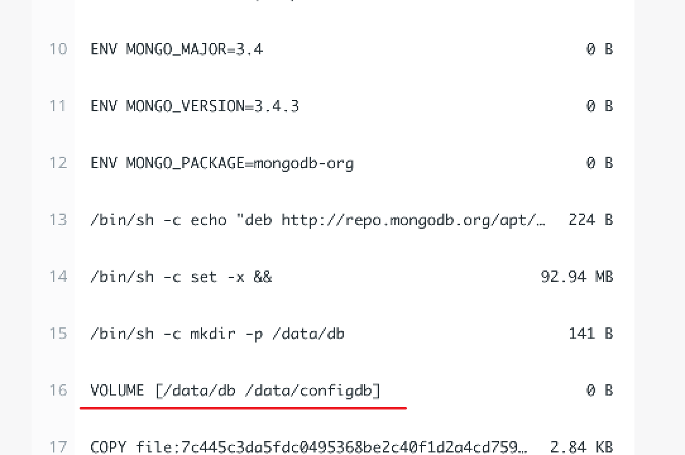

Reference: https://www.youtube.com/watch?v=3c-iBn73dDE
Pull Images 1 docker pull image_name :image_tag
View Images 1 2 docker images docker image ls
Run Images 1 docker run -d -p 8080 :8081 --net my_network --name container_name image_name
If image not exists, will pull from repository.
-d: detached (not occupied terminal)-p host_port:container_port
View Containers Start/Stop Containers 1 2 docker start container_id docker stop container_id
Debug Open Container Command Line 1 docker exec -it container_id /bin/ bash
Print Container Logs 1 docker logs container_id
Network 1 docker create network my_network
Delete Images/Container 1 docker image rm [OPTIONS] IMAGE [IMAGE ...]
Docker Compose
Run images together as a group. Don’t need to retype configuration, etc.
1 2 docker-compose -f docker-compose .yaml up docker-compose -f docker-compose .yaml down
docker-compose.yaml Example 1 2 3 4 5 6 7 8 9 10 11 12 13 14 15 16 17 18 19 20 21 22 23 24 25 26 version: '3' services: my-app: image: 67832 ...r.ecr.us-east-2.amazonaws.com/my-app:latest ports: - 3000 :3000 mongodb: image: mongo:4.2.1 ports: - 27017 :27017 environment: - MONGO_INITDB_ROOT_USERNAME=admin - MONGO_INITDB_ROOT_PASSWORD=password volumes: - mongo-data:/data/db mongo-express: image: mongo-express:0.54 ports: - 8080 :8081 environment: - ME_CONFIG_MONGODB_ADMINUSERNAME=admin - ME_CONFIG_MONGODB_ADMINPASSWORD=password - ME_CONFIG_MONGODB_SERVER=mongodb volumes: mongo-data: driver: local
Build Image
Build the image to push into the remote repository, ie. push to ECR and then deploy to ECS.
1 docker build -t my-app:1 .0 .
Dockerfile Example 1 2 3 4 5 6 7 8 9 10 11 12 13 14 15 16 FROM node:13 -alpineENV MONGO_DB_USERNAME=admin \ MONGO_DB_PWD=password RUN mkdir -p /home/app COPY ./app /home/app WORKDIR /home/app RUN npm install CMD ["node" , "server.js" ] EXPOSE 8000
Docker Volumes Note : Container restart all data will lose. Use Volumes to store data permanently.
Create Volume Create volume while starting a container
1 docker run -v volume_name:/container/ path image_name
The above is the named volumes type.
Types of Volumes Bind mount: mount host and container, data change both sides -v /host/path:/container/path
Anonymous volumes: -v /container/path
Named volumes (should use this one): give the volume a name then other container can refer to and shared and used data later.
Other Commands 1 2 3 docker volume ls docker volume create volume_name docker volume rm volume_name
Note
Volumes may not work for some path. For example, for MongoDB, work for /data/db but /data (might be some permission problems). Should refer to the doc or see the Dockerfile comes with the image from docker hub (image layers: VOLUME […]

Even though used named volume, docker may still create some extra anonymous volumes for other uses.